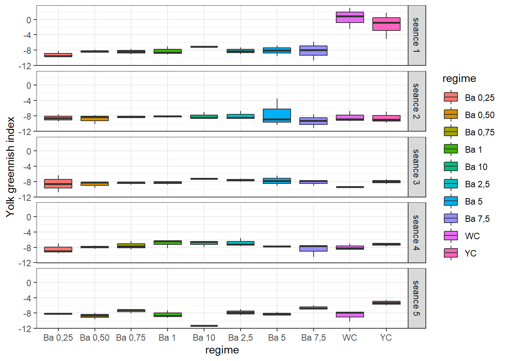
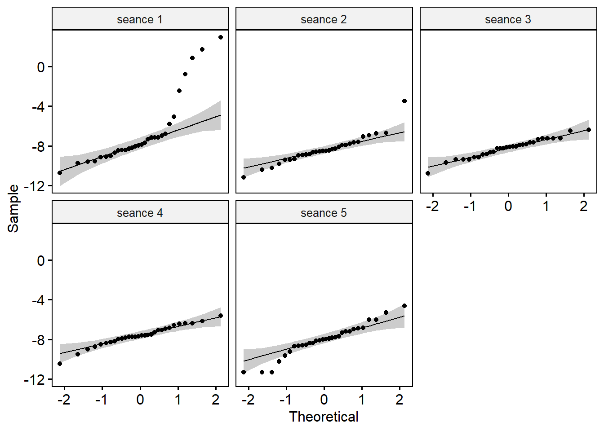
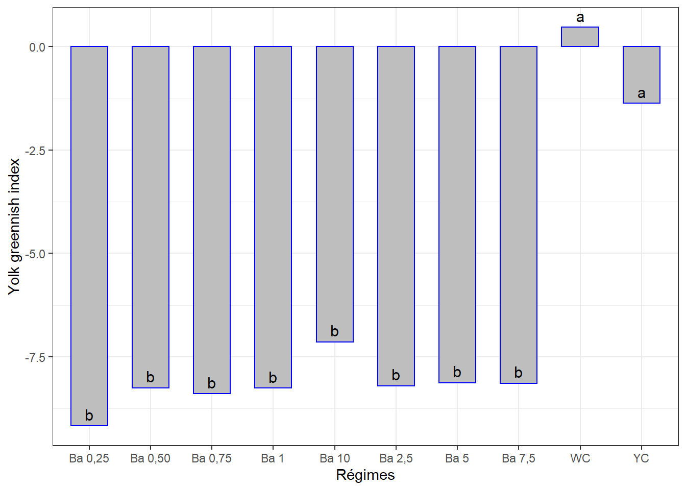
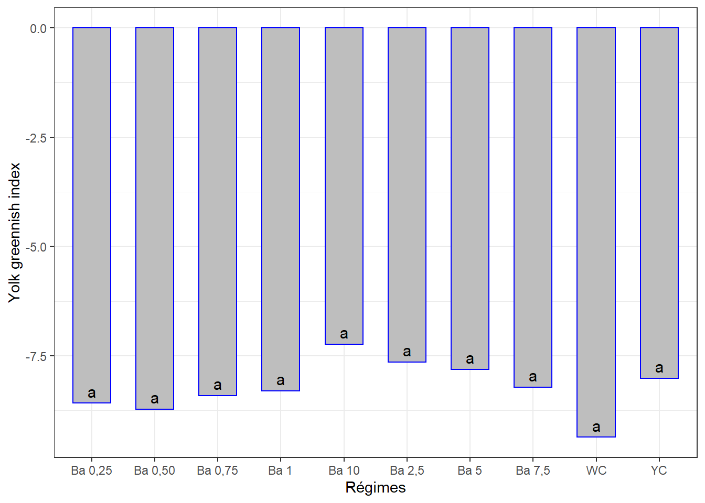
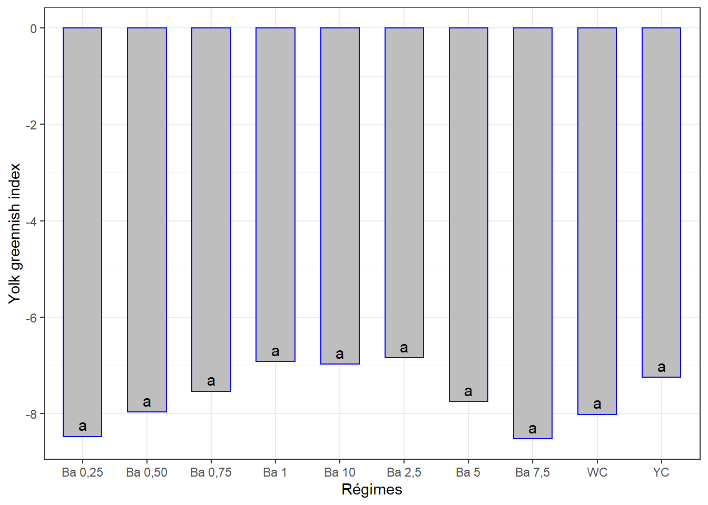
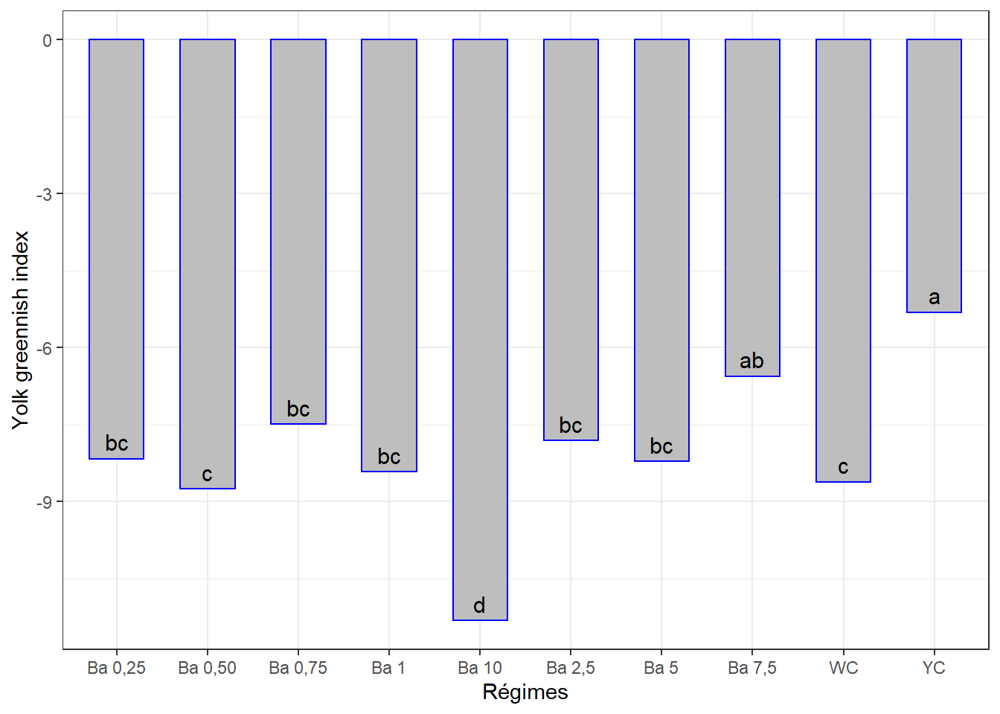
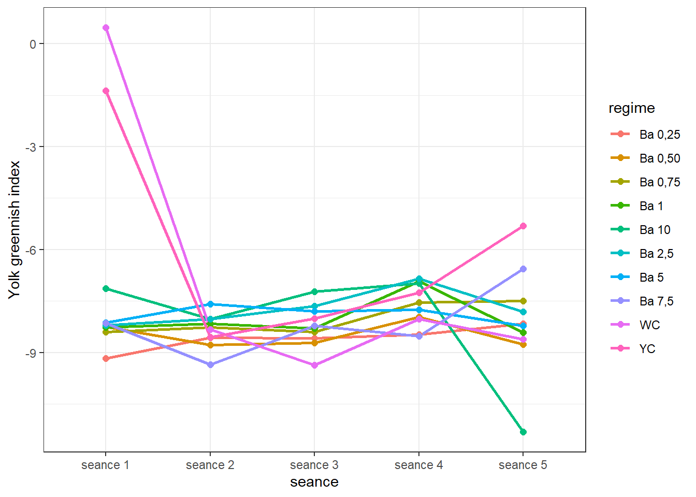
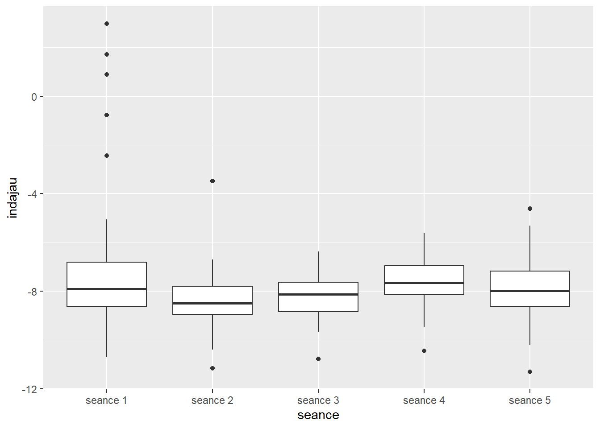
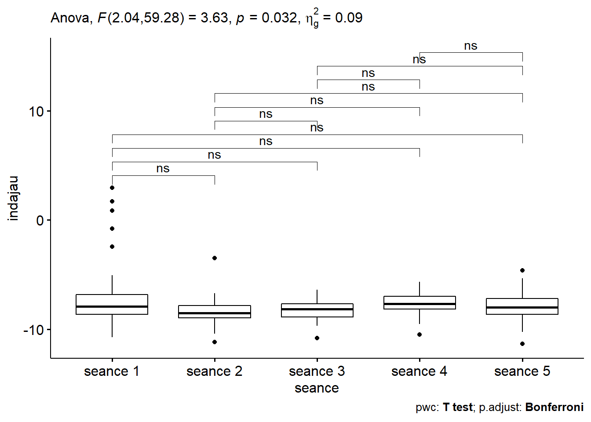

Chapitre 13 Indice A du jaune d’oeuf
La démarche sera la même que celle des chapitres précédents. Il se peut qu’il y ait moins de commentaires.
Même jeu de données oeuf.csv qui contient différentes mesures dont l’ évaluation de la coloration du jaune (Yolk greennish index) - indice A , mesurée en 5 séances. Mêmes traitements (régimes).
La question est de savoir si les différents régimes induisent des indices de coloration verte du jaune d’oeuf significativement différents avec le temps.
Mais chaque traitement n’ayant pas été appliqué sur tous les groupes d’oiseaux, l’ANOVA à mesures répétées ne pourrait pas être appliquée. Nous comparerons les effets des traitements séance par séance, puis à l’aide d’une figure on appréciera s’il y a une évolution de cet indice en fonction du temps.
13.1 Les données
ajau <- read_csv("data/oeuf.csv")
ajau <- ajau %>%
select(seance, regime, no_oeuf, indajau) %>%
mutate(id = rep(1:30, 5), .before = 1) %>%
convert_as_factor(id, seance, regime)Le tableau a été préalablement structuré en format long en Excel. J’ai ajouté un identifiant (id) pour les échantillons des séances.
## Rows: 150
## Columns: 5
## $ id <fct> 1, 2, 3, 4, 5, 6, 7, 8, 9, 10, 11, 12, 13, 14, 15, 16, 17, 18,~
## $ seance <fct> seance 1, seance 1, seance 1, seance 1, seance 1, seance 1, se~
## $ regime <fct> "Ba 0,25", "Ba 0,25", "Ba 0,25", "Ba 0,50", "Ba 0,50", "Ba 0,5~
## $ no_oeuf <dbl> 1, 2, 3, 1, 2, 3, 1, 2, 3, 1, 2, 3, 1, 2, 3, 1, 2, 3, 1, 2, 3,~
## $ indajau <dbl> -9.600, -8.180, -9.740, -7.890, -8.400, -8.460, -9.100, -7.690~13.2 Visualisation boxplots
bxp <- ggplot(ajau, aes(x = regime, y = indajau, fill = regime)) +
geom_boxplot() +
facet_grid(seance ~ .) +
theme(axis.text.x = element_text(angle = 90, color = "bajauk", vjust = 0.5, hjust = 1)) +
ylab("Yolk greennish index") +
theme_bw()
bxp
=> Variations notables entre les traitements pour certaines séances.
13.3 Détection des valeurs aberrantes extrêmes
## [1] seance regime id no_oeuf indajau is.outlier is.extreme
## <0 rows> (or 0-length row.names)=> Pas de valeurs aberrantes extrêmes pour toutes les séances.
13.4 Conditions de l’ANOVA
13.4.1 Normalité
Si les données sont normalement distribuées, la p-value de Shapiro-Wilk doit être supérieure à 0,05 pour chaque régime.
## # A tibble: 5 x 4
## seance variable statistic p
## <fct> <chr> <dbl> <dbl>
## 1 seance 1 indajau 0.776 0.0000242
## 2 seance 2 indajau 0.912 0.0170
## 3 seance 3 indajau 0.975 0.686
## 4 seance 4 indajau 0.973 0.623
## 5 seance 5 indajau 0.956 0.249=> Normalité pour les séances 3 à 5. Mais ce test est destiné à être appliqué sur les résidus du modèle.
Créer des QQ-plots pour chaque point par séance

On explorera les données séances par séance pour palier au problème de normalité.
13.4.2 Homogénéité des variances
## # A tibble: 5 x 5
## seance df1 df2 statistic p
## <fct> <int> <int> <dbl> <dbl>
## 1 seance 1 9 20 1.38 0.262
## 2 seance 2 9 20 0.776 0.640
## 3 seance 3 9 20 1.53 0.204
## 4 seance 4 9 20 0.350 0.946
## 5 seance 5 9 20 0.477 0.873=> Toutes les valeurs p sont > 0.05 => toutes les variances sont homogènes.
13.5 ANOVA à 1 facteur séance par séance
13.5.1 Séance 1
## # A tibble: 5 x 7
## id seance regime no_oeuf indajau is.outlier is.extreme
## <fct> <fct> <fct> <dbl> <dbl> <lgl> <lgl>
## 1 25 seance 1 YC 1 1.71 TRUE TRUE
## 2 26 seance 1 YC 2 -0.78 TRUE TRUE
## 3 28 seance 1 WC 1 0.88 TRUE TRUE
## 4 29 seance 1 WC 2 -2.44 TRUE FALSE
## 5 30 seance 1 WC 3 2.97 TRUE TRUE=> 4 observations aberrantes extrêmes. Pas exclues.
13.5.1.1 Le modèle
## Anova Table (Type II tests)
##
## Response: indajau
## Sum Sq Df F value Pr(>F)
## regime 300.494 9 10.931 5.788e-06 ***
## Residuals 61.087 20
## ---
## Signif. codes: 0 '***' 0.001 '**' 0.01 '*' 0.05 '.' 0.1 ' ' 1La p-value < 0.05 => Différence très significative entre les effets d’es’au moins 2 régimes sur cet indice à la séance 1.
## # A tibble: 1 x 3
## variable statistic p.value
## <chr> <dbl> <dbl>
## 1 residuals(lm1) 0.948 0.152=> Normalité Okay !
13.5.1.2 Comparaisons par paires
Comparaisons des moyennes par paires, Student - Newman - Keuls.
cm1 <- (SNK.test(lm1, "regime", group = TRUE))$groups %>%
mutate(regime = rownames(.)) %>%
select(regime, indajau, groups) %>%
as_tibble()
cm1## # A tibble: 10 x 3
## regime indajau groups
## <chr> <dbl> <chr>
## 1 WC 0.47 a
## 2 YC -1.37 a
## 3 Ba 10 -7.14 b
## 4 Ba 5 -8.13 b
## 5 Ba 7,5 -8.14 b
## 6 Ba 2,5 -8.20 b
## 7 Ba 0,50 -8.25 b
## 8 Ba 1 -8.26 b
## 9 Ba 0,75 -8.40 b
## 10 Ba 0,25 -9.17 bggplot(data = cm1, mapping = aes(x = regime, y = indajau)) +
geom_bar(stat = "identity", color = "blue", fill = "grey", width = 0.6) +
#ylim(-10, 1) +
geom_text(aes(label = groups), vjust = -0.5, size = 4) +
xlab("Régimes") + ylab("Yolk greennish index") +
theme(axis.text.x = element_text(angle = 45, color = "bajauk", vjust = 1, hjust = 1)) +
theme_bw()
13.5.2 Séance 2
13.5.2.1 Le modèle
## # A tibble: 2 x 7
## id seance regime no_oeuf indajau is.outlier is.extreme
## <fct> <fct> <fct> <dbl> <dbl> <lgl> <lgl>
## 1 16 seance 2 Ba 5 1 -3.48 TRUE TRUE
## 2 19 seance 2 Ba 7,5 1 -11.2 TRUE FALSE=> 1 observation aberrante extrême. Pas exclue.
## Anova Table (Type II tests)
##
## Response: indajau
## Sum Sq Df F value Pr(>F)
## regime 6.323 9 0.2779 0.9734
## Residuals 50.566 20La p-value est < 0.01 => Différence très significative entre les effetes d’au moins 2 régimes.
## # A tibble: 1 x 3
## variable statistic p.value
## <chr> <dbl> <dbl>
## 1 residuals(lm2) 0.951 0.184=> Normalité Okay.
13.5.2.2 Comparaisons par paires
cm2 <- (SNK.test(lm2, "regime", group = TRUE))$groups %>%
mutate(regime = rownames(.)) %>%
select(regime, indajau, groups) %>%
as_tibble()
cm2## # A tibble: 10 x 3
## regime indajau groups
## <chr> <dbl> <chr>
## 1 Ba 5 -7.59 a
## 2 Ba 10 -8.02 a
## 3 Ba 2,5 -8.02 a
## 4 Ba 1 -8.16 a
## 5 Ba 0,75 -8.27 a
## 6 WC -8.33 a
## 7 YC -8.56 a
## 8 Ba 0,25 -8.57 a
## 9 Ba 0,50 -8.77 a
## 10 Ba 7,5 -9.35 aggplot(data = cm2, mapping = aes(x = regime, y = indajau)) +
geom_bar(stat = "identity", color = "blue", fill = "grey", width = 0.6) +
#ylim(-10, 0) +
geom_text(aes(label = groups), vjust = -0.5, size = 4) +
xlab("Régimes") + ylab("Yolk greennish index") +
theme(axis.text.x = element_text(angle = 45, color = "bajauk", vjust = 1, hjust = 1)) +
theme_bw()
13.5.3 Séance 3
## # A tibble: 1 x 7
## id seance regime no_oeuf indajau is.outlier is.extreme
## <fct> <fct> <fct> <dbl> <dbl> <lgl> <lgl>
## 1 1 seance 3 Ba 0,25 1 -10.8 TRUE FALSE=> Pas d’observations aberrantes extrêmes.
13.5.3.1 Le modèle
## Anova Table (Type II tests)
##
## Response: indajau
## Sum Sq Df F value Pr(>F)
## regime 9.7527 9 1.2112 0.3417
## Residuals 17.8935 20La p-value > 0.05 => Pas de différence significative entre les effetes des régimes.
## # A tibble: 1 x 3
## variable statistic p.value
## <chr> <dbl> <dbl>
## 1 residuals(lm3) 0.916 0.0218=> Normalité pas satisfaite.
## # A tibble: 1 x 4
## df1 df2 statistic p
## <int> <int> <dbl> <dbl>
## 1 9 20 1.53 0.204=> Par rapport à la normalité, essayons le non paramétrique
## # A tibble: 1 x 6
## .y. n statistic df p method
## * <chr> <int> <dbl> <int> <dbl> <chr>
## 1 indajau 30 14.4 9 0.11 Kruskal-Wallis=> Pas de différence significative entre les effetes des régimes. On peut donc repporter les moyennes et écart-types et ajouter la même lettre de classification. Faisons le en supposant que les conditions de l’ANOVA paramétrique sont respectée.:
13.5.3.2 Comparaisons par paires
cm3 <- (SNK.test(lm3, "regime", group = TRUE))$groups %>%
mutate(regime = rownames(.)) %>%
select(regime, indajau, groups) %>%
as_tibble()
cm3## # A tibble: 10 x 3
## regime indajau groups
## <chr> <dbl> <chr>
## 1 Ba 10 -7.23 a
## 2 Ba 2,5 -7.64 a
## 3 Ba 5 -7.80 a
## 4 YC -8.01 a
## 5 Ba 7,5 -8.22 a
## 6 Ba 1 -8.30 a
## 7 Ba 0,75 -8.41 a
## 8 Ba 0,25 -8.58 a
## 9 Ba 0,50 -8.72 a
## 10 WC -9.36 a… Et la visualisation graphique :
ggplot(data = cm3, mapping = aes(x = regime, y = indajau)) +
geom_bar(stat = "identity", color = "blue", fill = "grey", width = 0.6) +
geom_text(aes(label = groups), vjust = -0.5, size = 4) +
#ylim(0, 90) +
xlab("Régimes") + ylab("Yolk greennish index") +
theme(axis.text.x = element_text(angle = 45, color = "bajauk", vjust = 1, hjust = 1)) +
theme_bw()
13.5.4 Séance 4
13.5.4.1 Le modèle
## Anova Table (Type II tests)
##
## Response: indajau
## Sum Sq Df F value Pr(>F)
## regime 10.495 9 1.1558 0.3725
## Residuals 20.178 20La p-value > 0.05 => Pas de différence significative entre les effets des régimes.
## # A tibble: 1 x 3
## variable statistic p.value
## <chr> <dbl> <dbl>
## 1 residuals(lm4) 0.984 0.92413.5.4.2 Comparaisons par paires
cm4 <- (SNK.test(lm4, "regime", group = TRUE))$groups %>%
mutate(regime = rownames(.)) %>%
select(regime, indajau, groups) %>%
as_tibble()
cm4## # A tibble: 10 x 3
## regime indajau groups
## <chr> <dbl> <chr>
## 1 Ba 2,5 -6.85 a
## 2 Ba 1 -6.92 a
## 3 Ba 10 -6.98 a
## 4 YC -7.25 a
## 5 Ba 0,75 -7.54 a
## 6 Ba 5 -7.75 a
## 7 Ba 0,50 -7.97 a
## 8 WC -8.02 a
## 9 Ba 0,25 -8.48 a
## 10 Ba 7,5 -8.53 a13.5.4.3 Visualisation des groupes
ggplot(data = cm4, mapping = aes(x = regime, y = indajau)) +
geom_bar(stat = "identity", color = "blue", fill = "grey", width = 0.6) +
#ylim(0, 90) +
geom_text(aes(label = groups), vjust = -0.5, size = 4) +
xlab("Régimes") + ylab("Yolk greennish index") +
theme(axis.text.x = element_text(angle = 45, color = "bajauk", vjust = 1, hjust = 1)) +
theme_bw()
13.5.5 Séance 5
## # A tibble: 4 x 7
## id seance regime no_oeuf indajau is.outlier is.extreme
## <fct> <fct> <fct> <dbl> <dbl> <lgl> <lgl>
## 1 22 seance 5 Ba 10 1 -11.3 TRUE FALSE
## 2 23 seance 5 Ba 10 2 -11.3 TRUE FALSE
## 3 24 seance 5 Ba 10 3 -11.3 TRUE FALSE
## 4 25 seance 5 YC 1 -4.61 TRUE FALSE13.5.5.1 Le modèle
## Anova Table (Type II tests)
##
## Response: indajau
## Sum Sq Df F value Pr(>F)
## regime 65.254 9 13.215 1.28e-06 ***
## Residuals 10.973 20
## ---
## Signif. codes: 0 '***' 0.001 '**' 0.01 '*' 0.05 '.' 0.1 ' ' 1La p-value est < 0.01 => différence très significative entre les effetes d’au moins 2 régimes.
## # A tibble: 1 x 3
## variable statistic p.value
## <chr> <dbl> <dbl>
## 1 residuals(lm5) 0.972 0.608=> Normalité Okay.
13.5.5.2 Comparaisons par paires
cm5 <- (SNK.test(lm5, "regime", group = TRUE))$groups %>%
mutate(regime = rownames(.)) %>%
select(regime, indajau, groups) %>%
as_tibble()
cm5## # A tibble: 10 x 3
## regime indajau groups
## <chr> <dbl> <chr>
## 1 YC -5.32 a
## 2 Ba 7,5 -6.56 ab
## 3 Ba 0,75 -7.49 bc
## 4 Ba 2,5 -7.81 bc
## 5 Ba 0,25 -8.16 bc
## 6 Ba 5 -8.22 bc
## 7 Ba 1 -8.42 bc
## 8 WC -8.61 c
## 9 Ba 0,50 -8.76 c
## 10 Ba 10 -11.3 d13.5.5.3 Visualisation
ggplot(data = cm5, mapping = aes(x = regime, y = indajau)) +
geom_bar(stat = "identity", color = "blue", fill = "grey", width = 0.6) +
#ylim(0, 90) +
geom_text(aes(label = groups), vjust = -0.5, size = 4) +
xlab("Régimes") + ylab("Yolk greennish index") +
theme(axis.text.x = element_text(angle = 45, color = "bajauk", vjust = 1, hjust = 1)) +
theme_bw()
13.6 Évolution de l’indice A de du jaune par régime au cours du temps
13.6.1 Sommaire
ajau_ic <- summarySE(ajau,
measurevar = "indajau",
groupvars = c("seance", "regime"),
na.rm = TRUE)
ajau_ic## seance regime N indajau sd se ci
## 1 seance 1 Ba 0,25 3 -9.173333 0.8630952 0.4983082 2.1440473
## 2 seance 1 Ba 0,50 3 -8.250000 0.3132092 0.1808314 0.7780548
## 3 seance 1 Ba 0,75 3 -8.395000 0.7050000 0.4070319 1.7513171
## 4 seance 1 Ba 1 3 -8.260000 1.1416217 0.6591156 2.8359454
## 5 seance 1 Ba 10 3 -7.140000 0.0000000 0.0000000 0.0000000
## 6 seance 1 Ba 2,5 3 -8.203333 0.8519585 0.4918785 2.1163823
## 7 seance 1 Ba 5 3 -8.126667 1.3911985 0.8032088 3.4559287
## 8 seance 1 Ba 7,5 3 -8.143333 2.4712817 1.4267952 6.1390041
## 9 seance 1 WC 3 0.470000 2.7282045 1.5751296 6.7772358
## 10 seance 1 YC 3 -1.373333 3.4188351 1.9738654 8.4928572
## 11 seance 2 Ba 0,25 3 -8.573333 0.8918707 0.5149218 2.2155296
## 12 seance 2 Ba 0,50 3 -8.773333 1.2764142 0.7369381 3.1707888
## 13 seance 2 Ba 0,75 3 -8.266667 0.3302020 0.1906422 0.8202671
## 14 seance 2 Ba 1 3 -8.163333 0.3066486 0.1770436 0.7617572
## 15 seance 2 Ba 10 3 -8.020000 0.8404166 0.4852147 2.0877105
## 16 seance 2 Ba 2,5 3 -8.023333 1.1050038 0.6379742 2.7449815
## 17 seance 2 Ba 5 3 -7.593333 3.6383009 2.1005740 9.0380404
## 18 seance 2 Ba 7,5 3 -9.353333 1.7853944 1.0307980 4.4351657
## 19 seance 2 WC 3 -8.330000 1.4381585 0.8303212 3.5725839
## 20 seance 2 YC 3 -8.560000 1.4949247 0.8630952 3.7135989
## 21 seance 3 Ba 0,25 3 -8.580000 2.2000000 1.2701706 5.4651030
## 22 seance 3 Ba 0,50 3 -8.720000 0.8227393 0.4750088 2.0437978
## 23 seance 3 Ba 0,75 3 -8.406667 0.3894012 0.2248209 0.9673263
## 24 seance 3 Ba 1 3 -8.296667 0.4843897 0.2796625 1.2032906
## 25 seance 3 Ba 10 3 -7.230000 0.0000000 0.0000000 0.0000000
## 26 seance 3 Ba 2,5 3 -7.640000 0.4000000 0.2309401 0.9936551
## 27 seance 3 Ba 5 3 -7.805000 1.3450000 0.7765361 3.3411652
## 28 seance 3 Ba 7,5 3 -8.216667 0.8064945 0.4656298 2.0034433
## 29 seance 3 WC 3 -9.360000 0.0000000 0.0000000 0.0000000
## 30 seance 3 YC 3 -8.013333 0.6512552 0.3760024 1.6178076
## 31 seance 4 Ba 0,25 3 -8.476667 1.3531568 0.7812454 3.3614278
## 32 seance 4 Ba 0,50 3 -7.966667 0.4250098 0.2453795 1.0557829
## 33 seance 4 Ba 0,75 3 -7.536667 1.0804783 0.6238144 2.6840569
## 34 seance 4 Ba 1 3 -6.920000 1.1139569 0.6431433 2.7672224
## 35 seance 4 Ba 10 3 -6.976667 0.8367995 0.4831264 2.0787251
## 36 seance 4 Ba 2,5 3 -6.846667 1.0650039 0.6148803 2.6456164
## 37 seance 4 Ba 5 3 -7.750000 0.0000000 0.0000000 0.0000000
## 38 seance 4 Ba 7,5 3 -8.526667 1.6750622 0.9670976 4.1610852
## 39 seance 4 WC 3 -8.020000 0.8671217 0.5006329 2.1540497
## 40 seance 4 YC 3 -7.250000 0.5260228 0.3036994 1.3067131
## 41 seance 5 Ba 0,25 3 -8.163333 0.2203028 0.1271919 0.5472625
## 42 seance 5 Ba 0,50 3 -8.756667 0.8173942 0.4719228 2.0305198
## 43 seance 5 Ba 0,75 3 -7.493333 0.5254839 0.3033883 1.3053744
## 44 seance 5 Ba 1 3 -8.420000 0.9874715 0.5701169 2.4530152
## 45 seance 5 Ba 10 3 -11.320000 0.0000000 0.0000000 0.0000000
## 46 seance 5 Ba 2,5 3 -7.813333 0.7894513 0.4557899 1.9611057
## 47 seance 5 Ba 5 3 -8.220000 0.4757100 0.2746513 1.1817291
## 48 seance 5 Ba 7,5 3 -6.560000 0.4853864 0.2802380 1.2057668
## 49 seance 5 WC 3 -8.613333 1.3915579 0.8034163 3.4568214
## 50 seance 5 YC 3 -5.315000 0.7050000 0.4070319 1.751317113.6.2 Visualisation
ggplot(ajau_ic, aes(x = seance, y = indajau, colour = regime, group = regime)) +
geom_line(size = 1) +
geom_point(size = 2) +
ylab("Yolk greennish index") +
theme_bw()
Il ne semble pas se dégager une tendance concrète entre les différentes séances, ou légère augmentation. Vous jugerez.
Nous savons par les analyses pour chaque séance plus haut, que
- séance 1 : il existe des différences d’effet entre les régimes
- séance 2 : pas de différences signicatives d’effet entre les régimes
- séance 3 : pas de différences signicatives d’effet entre les régimes
- séance 4 : pas de différences signicatives d’effet entre les régimes
- séance 5 : il existe des différences d’effet entre les régimes
Puisque les données ne répondent pas aux conditions pour évaluer les effets des régimes au cours du temps, on négligera l’effet des régimes pour évaluer globalement l’effet du temps sur cet indice.
On pourrait se demander si les indices A mesurés sur l’ensemble des sujets sont significativement différentes d’une séance à l’autre (c’est-à-dire avec le temps).
13.6.3 Effet du temps
13.6.3.1 boxplots, facteur temps

13.6.3.2 Valeurs aberrantes, facteur temps
ajau <- ajau %>% mutate(id2 = 1:nrow(.), .before = 1)
ajau_out <- ajau %>%
group_by(seance) %>%
identify_outliers(indajau)
ajau_out## # A tibble: 13 x 8
## seance id2 id regime no_oeuf indajau is.outlier is.extreme
## <fct> <int> <fct> <fct> <dbl> <dbl> <lgl> <lgl>
## 1 seance 1 25 25 YC 1 1.71 TRUE TRUE
## 2 seance 1 26 26 YC 2 -0.78 TRUE TRUE
## 3 seance 1 28 28 WC 1 0.88 TRUE TRUE
## 4 seance 1 29 29 WC 2 -2.44 TRUE FALSE
## 5 seance 1 30 30 WC 3 2.97 TRUE TRUE
## 6 seance 2 46 16 Ba 5 1 -3.48 TRUE TRUE
## 7 seance 2 49 19 Ba 7,5 1 -11.2 TRUE FALSE
## 8 seance 3 61 1 Ba 0,25 1 -10.8 TRUE FALSE
## 9 seance 4 110 20 Ba 7,5 2 -10.5 TRUE FALSE
## 10 seance 5 142 22 Ba 10 1 -11.3 TRUE FALSE
## 11 seance 5 143 23 Ba 10 2 -11.3 TRUE FALSE
## 12 seance 5 144 24 Ba 10 3 -11.3 TRUE FALSE
## 13 seance 5 145 25 YC 1 -4.61 TRUE FALSE=> 6 observations aberrantes extrêmes. Mais pas exclues.
13.6.3.3 Homogénéité des variances et ANOVA, facteur temps
Les autres conditions ont déjà été vérifiées. La fonction anova_test() réalise également le test de sphéricité de Mauchly.
## ANOVA Table (type III tests)
##
## Effect DFn DFd F p p<.05 ges
## 1 seance 2.04 59.28 3.632 0.032 * 0.094=> C’est la p-value qui nous intéresse et elle est < 0.05 => Différence significative entre certaines séances.
13.6.3.4 Comparaisons par paires, facteur temps
tph <- ajau %>%
pairwise_t_test(indajau ~ seance,
paired = TRUE,
p.adjust.method = "bonferroni")
tph %>%
select(group1, group2, p, p.adj, p.adj.signif)## # A tibble: 10 x 5
## group1 group2 p p.adj p.adj.signif
## <chr> <chr> <dbl> <dbl> <chr>
## 1 seance 1 seance 2 0.025 0.252 ns
## 2 seance 1 seance 3 0.035 0.35 ns
## 3 seance 1 seance 4 0.16 1 ns
## 4 seance 1 seance 5 0.041 0.411 ns
## 5 seance 2 seance 3 0.691 1 ns
## 6 seance 2 seance 4 0.029 0.286 ns
## 7 seance 2 seance 5 0.462 1 ns
## 8 seance 3 seance 4 0.022 0.217 ns
## 9 seance 3 seance 5 0.67 1 ns
## 10 seance 4 seance 5 0.237 1 ns13.6.3.5 Boxplots avec p-values
tph <- tph %>% add_xy_position(x = "seance")
ggboxplot(ajau, x = "seance", y = "indajau") +
#ylim(0, 100) +
stat_pvalue_manual(tph) +
labs(subtitle = get_test_label(lm, detailed = TRUE),
caption = get_pwc_label(tph))
Parfois difficiles les données sur ces indices ! La p-value du test = 0.032 < à 0.05, mais il n’y a pas de groupe distingués par la comparaison par paires !